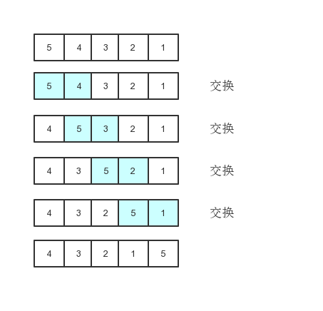
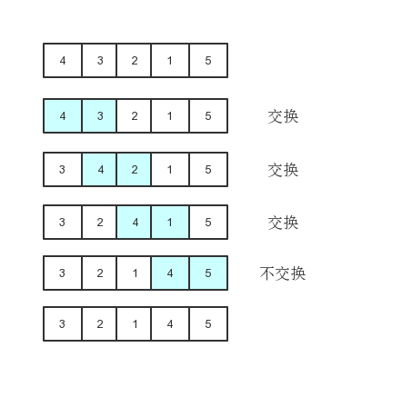

对于经典算法，你是否也遇到这样的情形：学时觉得很清楚，可过阵子就忘了？
本系列文章帮助你解决这个问题。
其实排序算法，仔细品读他的名字就见名知意了。
比如冒泡排序就很形象，遍历n次，每次循环相邻元素两两比较，把其中大的元素往后放。例如：
用javascript写冒泡排序如下

上图演示了冒泡过程的第一次循环。其中，最大的元素5就像气泡一样逐步上升到最后一位。
我们用代码展示：
const arr = [3,9,6,1,2,4,0] ;
for(let i = 0;i<arr.length-1;i++ ){
if(arr[i]>arr[i+1]){
swap(arr,i,i+1);
}
}
console.log(arr)其中swap函数封装了两个元素如何交换（这样是用es6的箭头函数写的，记得把swap放在用swap的上面，要先声明，相当于变量）：
const swap = (arr,i,j)=>{
[arr[i],arr[j]]=[arr[j],arr[i]]
}
或者这样（普通函数，放哪里都行）：
function swap(arr,i,j){
[arr[i],arr[j]]=[arr[j],arr[i]]
}第一次遍历会把最大的元素放到倒数第一个位置上，第二次遍历会把第2大的元素放倒数第二个位置上。

以此类推。此时，我们也很容易把这n次遍历写出来：
for(let j = 0;j<arr.length;j++){
for(let i = 0;i<arr.length-1;i++ ){
if(arr[i]>arr[i+1]){
swap(arr,i,i+1);
}
}
}到这里js写的冒泡排序已经说完了。
用java写冒泡排序如下
java冒泡排序跟javascript冒泡排序肯定原理是相同的，不同的就是语言不同，下面就来实现java的冒泡排序。
int[] arr = new int[]{6, 2, 5, 4, 9, 1, 3, 0};
for (int j = 0; j < arr.length; j++) {
for (int i = 0; i < arr.length - 1; i++) {
if (arr[i] > arr[i + 1]) {
swap(arr, i, i + 1);
}
}
}其中swap是一个静态方法（用来调换位置）：
public static void swap(int[] arr, int i, int j) {
int temp;
temp = arr[i];
arr[i] = arr[j];
arr[j] = temp;
}到此冒泡排序就说完了，下次再说一下其他排序。
总结：冒泡排序不需要额外空间，是本地排序，相等元素是不会交换前后顺序，因而也是稳定排序，时间复杂度为O(n^2)，适用于少量数据排序，但实际中用得不多。